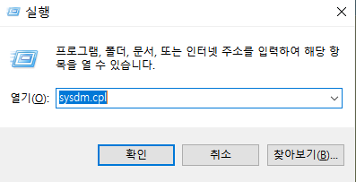
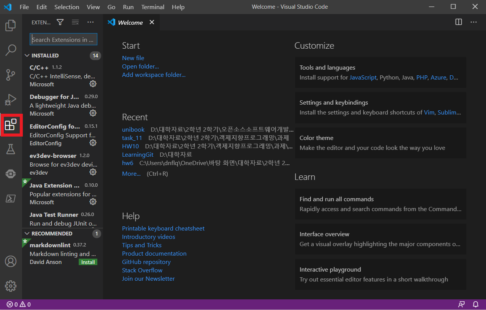

들어가기에 앞서
여러분들이 unibook을 사용하기에 앞서 필요한 준비물이 있습니다. 지금부터
Visual Studio Code(VScode)
bash
gcc
macOS/Window/Linux
GitHub
StackOverflow
에 대한 간단한 설명이나 실행/사용법을 순서대로 알려드리겠습니다.
Visual Studio Code(VScode)
: 마이크로소프트에서 개발한 문서 편집기로, txt, C, C++등 다양한 확장자의 문서를 편집할 수 있습니다. macOS, Window, Linux의 모든 운영체제 지원합니다.
설치(macOS, Window, Linux)
1 macOS
준비중
2 Windows
VScode는 컴파일러를 따로 포함하고 있지 않기 때문에 컴파일러(gcc)를 설치해주어야합니다. 컴파일러에 대한 설명은 뒤에 gcc부분에서 더 자세하게 설명해드리겠습니다.
VScode를 설치하기에 앞서 컴파일러부터 설치해보겠습니다.
1 Windows에서 gcc를 사용할 수 있게 해주는 MinGW 를 설치합니다. 아래 사이트로 들어가 SourceForge를 눌러서 다운받습니다. http://mingw-w64.org/doku.php/download/mingw-builds
Setting은 본인 컴퓨터 사양에 맞게 해줍니다.

설치가 끝난 후 Window+R로 실행창을 켜 sysdm.cpl을 입력합니다.

시스템 속성 창에서 고급 -> 환경변수창을 연 뒤, 사용자 변수에서 Path를 선택한 후, '편집'을 선택합니다.

새로만들기를 선택하여 아래의 경로를 입력해줍니다.
C:\Program Files\mingw-w64\x86_64-8.1.0-posix-seh-rt_v6-rev0\mingw64\bin
마지막으로 cmd창에서 gcc --version 명령어를 입력하여 gcc가 정상적으로 설치되었는지 확인합니다.
vscodeDownload_window_6
{kind=link}
이제 VScode를 설치해보겠습니다.
https://code.visualstudio.com/ 로 이동하여 vscode를 다운받습니다.

다운 완료 후 첫 실행화면입니다.

다음의 아이콘을 선택하면 필요한 extension(확장프로그램)을 설치할 수 있습니다.(Ctrl+Shift+x)

다음으로 Terminal -> Configure Default Build Task... -> Create tasks.json file from template -> MSBuild
순으로 선택하여 tasks.json 파일을 아래와 같이 수정합니다.
```{
"version": "2.0.0",
"runner": "terminal",
"type": "shell",
"echoCommand": true,
"presentation" : { "reveal": "always" },
"tasks": [
//C++ 컴파일
{
"label": "save and compile for C++",
"command": "g++",
"args": [
"${file}",
"-o",
"${fileDirname}/${fileBasenameNoExtension}"
],
"group": "build",
//컴파일시 에러를 편집기에 반영
//참고: https://code.visualstudio.com/docs/editor/tasks#_defining-a-problem-matcher
"problemMatcher": {
"fileLocation": [
"relative",
"${workspaceRoot}"
],
"pattern": {
// The regular expression.
//Example to match: helloWorld.c:5:3: warning: implicit declaration of function 'prinft'
"regexp": "^(.*):(\\d+):(\\d+):\\s+(warning error):\\s+(.*)$",
"file": 1,
"line": 2,
"column": 3,
"severity": 4,
"message": 5
}
}
},
//C 컴파일
{
"label": "save and compile for C",
"command": "gcc",
"args": [
"${file}",
"-o",
"${fileDirname}/${fileBasenameNoExtension}"
],
"group": "build",
//컴파일시 에러를 편집기에 반영
//참고: https://code.visualstudio.com/docs/editor/tasks#_defining-a-problem-matcher
"problemMatcher": {
"fileLocation": [
"relative",
"${workspaceRoot}"
],
"pattern": {
// The regular expression.
//Example to match: helloWorld.c:5:3: warning: implicit declaration of function 'prinft'
"regexp": "^(.*):(\\d+):(\\d+):\\s+(warning error):\\s+(.*)$",
"file": 1,
"line": 2,
"column": 3,
"severity": 4,
"message": 5
}
}
},
// // 바이너리 실행(Windows)
{
"label": "execute",
"command": "cmd",
"group": "test",
"args": [
"/C", "${fileDirname}\\${fileBasenameNoExtension}"
]
}
]
}
```
이제 마지막입니다. File -> Preference -> Keyboard Shortcuts(Ctrl+K Ctrl + S)
로 이동하여 keybindings.json 파일을 아래와 같이 수정합니다.
// Place your key bindings in this file to override the defaults [ { "key": "ctrl+alt+c", "command":"workbench.action.tasks.test"} ]
3 Linux
Linux에서는 macOS나 Windows와 다르게 터미널 창에서 VScode를 설치할 수 있습니다.(터미널은 Ctrl+Alt+T 단축키로 열 수 있습니다.)
명령어 입력으로 우선 컴파일러부터 설치해줍니다.
sudo apt-get install build-essential
설치가 완료되면 아래의 명령어를 입력하여 정상설치 되었는지 확인합니다.
gcc --help
이어서 VScode를 설치해보겠습니다.
1 MS의 GPG를 다운받기 위한 curl 패키지를 설치합니다.
sudo apt-get install curl
2 GPG를 다운받아서 /etc/apt/trusted.gpg.d/ 경로에 복사합니다.
sudo sh -c ' curl https://packages.microsoft.com/keys/microsoft.asc | gpg --dearmor > /etc/apt/trusted.gpg.d/microsoft.gpg '
3 VScode를 다운받기 위한 저장소를 /etc/apt/sources.list.d/ 경로에 추가해주겠습니다.
sudo sh -c ' echo " deb [arch=amd64] https://packages.microsoft.com/repos/vscode stable main " > /etc/apt/sources.list.d/vscode.list '
4 패키지를 다운받았으므로 업데이트를 해줍니다.
sudo apt-get update
5 VScode를 설치합니다.
sudo apt-get install code
6 3에서 추가했던 저장소를 삭제합니다.
sudo rm /etc/apt/sources.list.d/vscode.list
VScode의 설치가 완료된 후, 터미널 창에 code라고 입력하여 VScode를 실행시킬 수 있습니다.

VScode를 실행시킨 후, Extentions(Ctrl+Shift+X)창을 열어서 원하는 확장 프로그램을 설치해줍니다.
우선 C/C++을 설치해보겠습니다.

Open Folder(Ctrl+Shift+E)에서 작업할 폴더를 선택할 수 있습니다.
다음으로 Terminal -> Configure Default Build Task... -> Create tasks.json file from template -> MSBuild
순으로 선택하여 tasks.json 파일을 아래와 같이 수정합니다.
{
"version": "2.0.0",
"runner": "terminal",
"type": "shell",
"echoCommand": true,
"presentation": {"reveal": "always"},
"tasks": [
//C++
{
"label":"save and compile C++",
"command":"g++",
"args":[
"-g3"
"${file}",
"-o",
"${fileDirname}/${fileBasenameNoExtension}"
],
"group": "build",
"problemMatcher":{
"fileLocation":[
"relative",
"${workspaceRoot"
],
"pattern": {
"regexp":"^(.*):(\\d+):(\\d+):\\s+(warning error):\\s+(.*)$",
"file":1,
"line":2,
"column": 3,
"severity": 4,
"message": 5
}
}
},
//C
{
"label":"save and compile C",
"command":"gcc",
"args":[
"-g3"
"${file}",
"-o",
"${fileDirname}/${fileBasenameNoExtension}"
],
"group": "build",
"problemMatcher":{
"fileLocation":[
"relative",
"${workspaceRoot"
],
"pattern": {
"regexp":"^(.*):(\\d+):(\\d+):\\s+(warning error):\\s+(.*)$",
"file":1,
"line":2,
"column": 3,
"severity": 4,
"message": 5
}
}
},
{
"label": "execute",
"command":"cd ${fileDirname} && ./${fileBasenameNoExtension}",
"group": "test"
}
]
}
이제 마지막입니다. File -> Preference -> Keyboard Shortcuts(Ctrl+K Ctrl + S)
로 이동하여 keybindings.json 파일을 아래와 같이 수정합니다.(컴파일/실행 단축키를 설정하는 것입니다.)
// Place your key bindings in this file to override the defaults
[
//compile
{ "key": "ctrl+shift+1", "command":"workbench.action.tasks.build"},
//execution
{ "key": "ctrl+shift+2", "command":"workbench.action.tasks.test"}
]
bash
bash는 (셸)Shell 의 한 종류 입니다. (셸은 bash말고도 zbash, ksh, csh 등 여러 종류가 있습니다.)
셸은 '명령어 처리기'로, 사람이 컴퓨터에게 일을 시킬 때 쓰는 프로그램이라고 할 수 있습니다.
우리가 명령어를 입력하면 셸이 받아들이고 명령어를 해석하여 커널을 사용하여 하드웨어를 조작합니다.

gcc
gcc는 GNU Compiler Collection 의 약자로, 언어 컴파일러입니다.
여기서 컴파일러란, C와 같은 고급언어를 binary code(이진코드)와 같은 저급언어로 변환해주는 프로그램입니다.
사람이 이해할 수 있는 C언어를 컴퓨터가 이해할 수 있는 binary code로 변환해주는 것이죠.
위에서 언급했듯이 Visual Studio Code는 컴파일러가 포함되어있지 않기 때문에 따로 설치를 해주었습니다.
macOS/Window/Linux
흔히 컴퓨터는 0과 1밖에 모른다고 합니다. 사실 엄밀히 말하면 0과 1도 모르죠. 사용자가 어떤 행동을 해서 전기신호를 주면, '전압이 충분하지 않다' 와 '전압이 충분하다' 그 정도를 구분할 수 있습니다.
하지만 사용자가 컴퓨터를 사용하기 위해 일일히 전기신호를 입력해줄 수는 없는 노릇입니다.
여기서 사용자가 컴퓨터를 쉽게 다룰 수 있게 해주는 인터페이스를 운영체제(=Operating System = OS)라고 합니다. 하드웨어와 소프트웨어를 관리하는 소프트웨어라고 할 수 있죠.
macOS, Window, Linux는 주로 널리 사용되는 운영체제입니다.
Gihub
Github는 버전 관리 시스템 입니다.
우리가 프로젝트를 진행할 때 완전히 혼자 하는 경우는 드물며, 대부분 다른 사람들과 함께 진행하게 됩니다. 이 때 프로젝트를 더 간편하게 관리하기 위해서 사용하는 것이 Github입니다. Github에 대한 자세한 설명은 VCS, 그리고 오픈소스에서 다루기로 하고 여기서는 Github 계정만 만들어보겠습니다.
우선 Github 사이트에 들어갑니다. https://github.com/
Sign up으로 회원가입을 진행합니다.

이메일 인증까지 모든 과정을 완료하면 아래와 같이 가입이 완료됩니다.
프로젝트를 위해서 repository를 생성하거나, team프로젝트를 위해 organization을 만들거나, Github 이용법에 대해서 볼 수 있는 선택지가 보입니다.
일단은 Skip this for now로 넘어가 줍시다.

이렇게 github 가입을 간단하게 완료했습니다.
StackOverflow
StackOverflow는 질문/답변 사이트입니다.
https://stackoverflow.com/
Sign up으로 회원가입을 해봅니다.


회원가입을 완료한 후, 로그인을 하면 Search 로 검색하거나 Ask Question 으로 질문을 올릴 수 있습니다.